Ficha

- Título: Demostración de Printbots y robots modulares
- Evento: Robocity 2012
- Autores: Juan González Gomez, Alberto Valero, Miguel Angel de Frutos, Antonio Barrientos
- Lugar: Escuela Técnica Superior de Ingenieros Industriales UPM
- Fecha: Días 7 y 8 de Julio de 2012
Resúmen
Dentro del Stand del Centro de Automática y Robótica UPM-CSIC, los miembros del grupo de robótica y cibernética expusimos algunos de nuestros robots. Dentro de este grupo, las líneas de investigación en las que yo estoy involucrado (Obijuan) son sobre Printbots y Robots modulares. Se hicieron demostraciones de los printbots: Miniskybot 1, Miniskybot 2, Protobot, Miniskybot con ruedas limitadas, Skyball y Minicube-I. También se hicieron demostraciones de robots modulares construidos a partir de módulos MY1. En paralelo, Juan David Hernández hizo demostraciones de su fantástico robot Bola.
Carteles de Printbots y Robots modulares
| 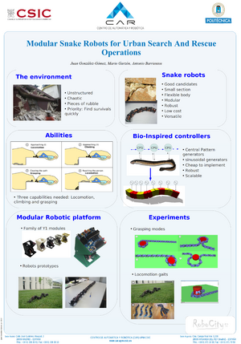 (Click para ampliar) |
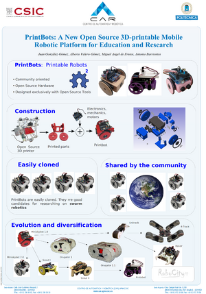 (Click para ampliar) |


Los Robots
 Miniskybot 1 |
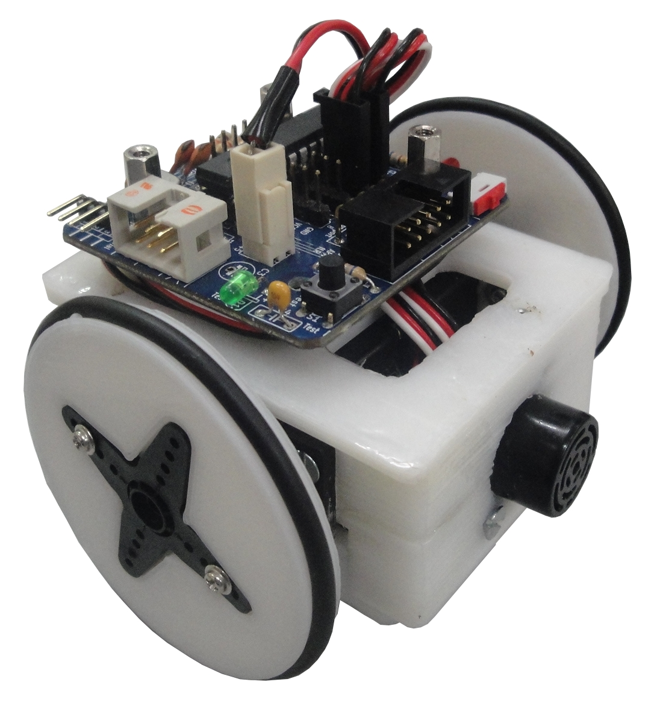 Miniskybot 2 |
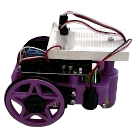 Protobot |
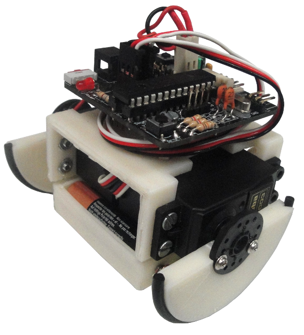 Ruedas limitadas |
| 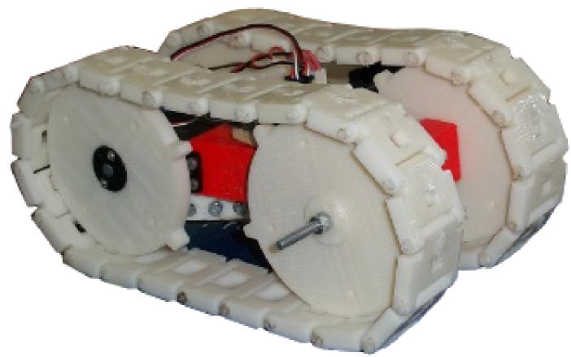 Orugator |
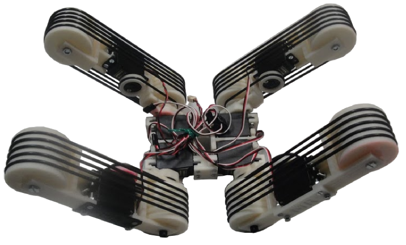 F-track |
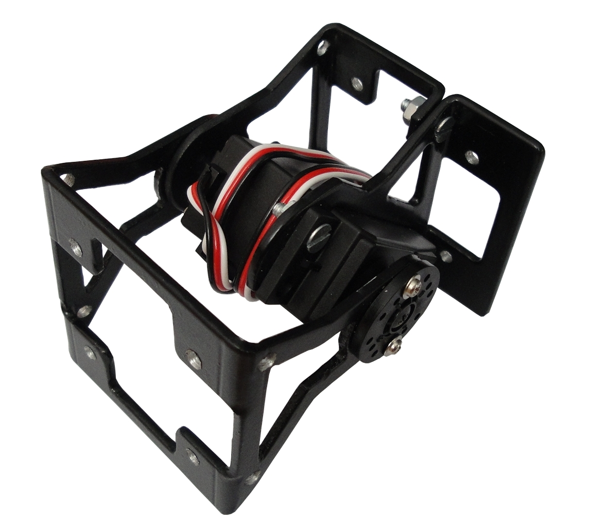 Módulos MY |
 Módulos REPY-1 |
| 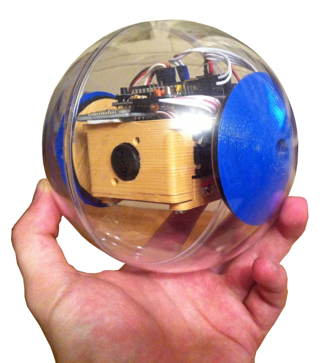 Skyball |
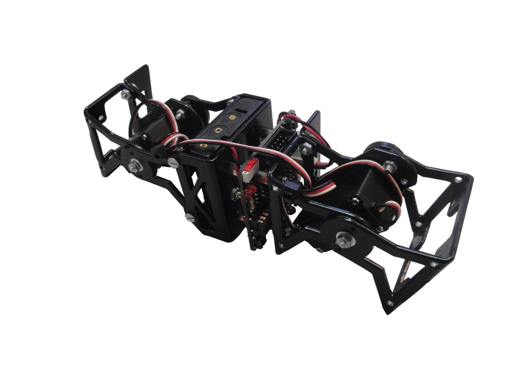 Minicube-I |
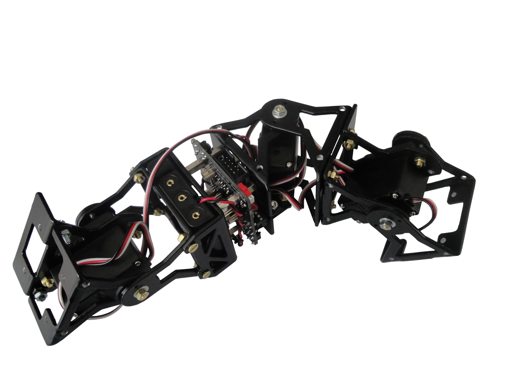 Minicube-II |
Descarga
| Robocity-2030-Printbots-Poster.pdf | Póster de Printbots (PDF) |
| Robocity-2030-Printbots-Poster.odp | Fuentes del poster de printbots, para LibreOffice 3.4 |
| Robocity-2030-Snake-USAR.pdf | Póster del robots modulares para búsqueda y rescate (PDF) |
| Robocity-2030-Snake-USAR.odp | Póster del robots modulares para búsqueda y rescate. Fuentes para LibreOffice 3.4 |
Vídeos
- Vídeo 1: Juan David Hernández paseando su robot bola por Robocity
- Vídeo 2: Moviendo el Miniskybot 2 con el mando de la Wii
- Vídeo 3: Locomoción de un Miniskybot con ruedas limitadas
Fotos
| Álbum completo de fotos en Google+ |
|---|
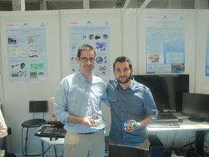 (Click para ampliar) |
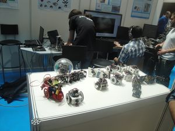 (Click para ampliar)) |
| 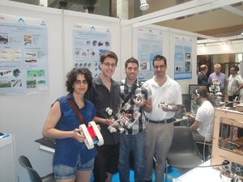 (Click para ampliar)) |
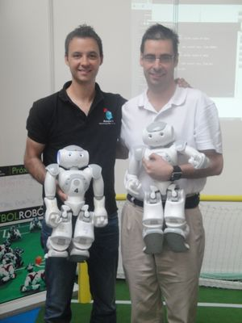 Con Carlos Agüero, de la Universidad Rey Juan Carlos (Click para ampliar)) |


Licencia
| |
Artículos
|
|
|
|
Enlaces
|
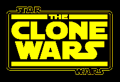 |
Proyecto Clone Wars: Construye tu impresora 3D opensource! |
- RepRap: Impresoras 3D auto-replicantes
- Makerbot: Empresa Makerbot, que comercializa impresoras 3D open-source
- Thingiverse: El youtube de los objetos
- Skybot: Robot móvil educacional (Libre pero NO imprimible)
- Mini-Skybot: Robot móvil libre e imprimible
- OpenScad: Herramienta libre para diseño de piezas
- Freecad: Herramienta libre de CAD
- Objetos 3D: Objetos imprimibles
- Tarjeta Skycube
- Kicad: Herramienta libre para diseño de circuitos
- Piezas creadas en Plastic Valley UC3M!
- Orugator
- Unitrack
- ASROB: Asociación de Robótica UC3M
- Grupo de impresoras 3D de la asociación de robótica UC3M
- OOML: Object Oriented Mechanics. Mecánica orientada a Objetos
Créditos
- Olalla Bravo es la creadora de la rueda loca del Miniskybot 1.0 y del robot Orugator
- Daniel Gómez es el creador de la pieza para los sensores IR del Miniskybot y del robot Orugator
- Jon Goitia es el creador de los robots Unitrack y F-track
- Fernando Delgado es el autor de las plantillas que he usado para hacer los pósters. ¡Muchas gracias!
Agradecimientos
- A Alberto Valero por traerse los printbots: Protobot, F-track y Orugator para enseñarlos. ¡¡Muchas gracias!!
Noicias
- 11/Jun/2012: Primera versión de la página lista
- 09/Jun/2012: Comenzada esta página